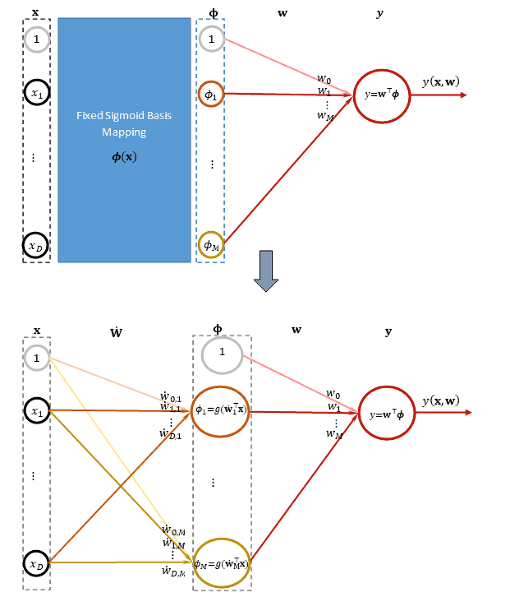
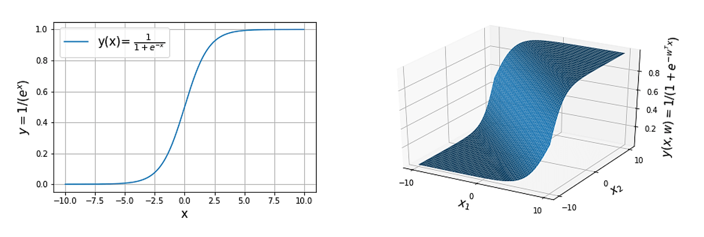
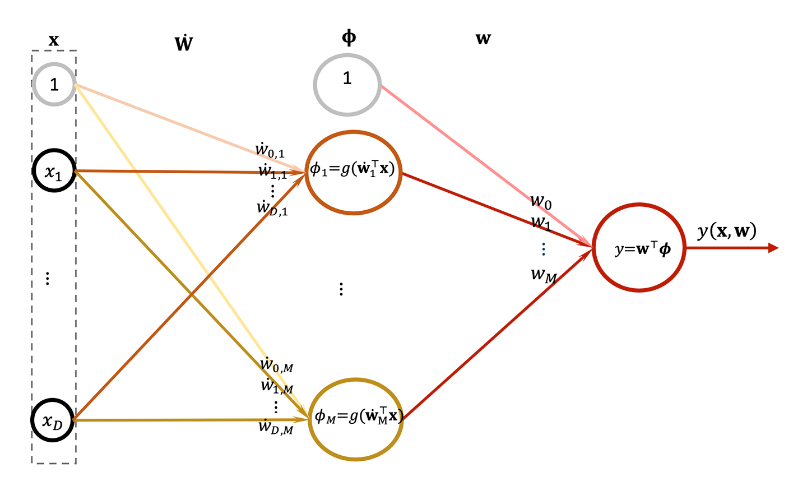

Non-linear regression via neural networks
Learning outcomes:
After completing this lesson you should be able to:
- build the architecture of a two layer or multi-layer neural network
- address the regression problem in full using feature extraction process that is built into the neural network architecture, negating the need from the designer to select fixed basis functions
- understand the role of activation function in the context of a neural network
- devise a suitable loss function for a neural network
- explain the process of building a suitable learning algorithm for a multi layer neural network that depends on the gradient descent and the error propagated through the network’s layers.
In the previous lesson we have covered a linear regression model with multiple outputs. In this lesson we extend this idea into models that have multiple layers with different activation function.
The layers should be defined in a way that do not reduce them into one layer in order to justify the added complexity of the new layers. This is not a strict guideline but it is undesirable to have redundant layers that can be otherwise replaced by fewer layers. The reducibility of the layers is tightly connected to the form of the activation function.
An activation function is a function that we pass the output through in order to transform the output into a form that is more useful for our model. The activation function can be linear or non-linear. In fact, so far we can say that we have been implicitly using an identity activation function (i.e. the output stays as is). The non-linearity of the activation function is a powerful tool that can transform an input into an output that has gone through considerable processing. The result of such a model with multiple layers and non-linear and linear activation function for each layer is called a neural network.
Non-linear one-output regression using multi-layer models
We start with the latest architecture that we have developed in the previous sections and amend it to suit our needs. Please bear in mind that we are building the simplest feedforward neural network here, but there are much more complex networks architecture that you will see later in the machine learning and deep learning modules.
We will adopt an approach where we will now develop an architecture that will allow us to adapt the basis function that we have assumed previously as being fixed. The number of the features are usually fixed in neural networks because it corresponds with number of neurons in a layer. Other techniques such as support vector machine allow for the flexibility of the adapting the number of feature basis according to the dataset but on the expense of less efficiency during the prediction. In neural networks the adaptation takes place in changing the expressing powers of the basis function by changing the weights of the hidden layer. Below we show how we move from a fixed basis model architecture into flexible adapted basis model architecture.

First, we denote the weight matrix that links the input features with the first set of linear models (called the hidden layer) as \(\dot{\mathbf{W}}\) and it is of dimension M×(D+1) where \(D\) is the input space dimension and \(M\) is the number of features that we would like to obtain from the hidden layer. Next, we denote the weight vector that links the hidden linear models with the output models (called output layer) as \(\mathbf{W}\) and it is of dimension \((M+1)\). Note that this architecture cannot be reduced into one-layer output as we did earlier due to the presence of the activation function. Which support what we have mentioned earlier that this is the simplest ANN for regression. So, what are the advantages of such an architecture over the one-layer architecture, you might ask? The answer is that it allows us to capture more complex relationship between the input and the output automatically without the need to come up with a suitable basis functions.
Both layers can be seen as linear regression model that have been cascaded together. The question remains to study how they interact with each other. The hidden layer output is given as:
Where \(\phi(\mathbf{x})\) is denoted as \(\boldsymbol{\phi}\) and \(\boldsymbol{\Phi}\) is a feature vector that includes a dummy feature \(ϕ_0=1\). The output of the input layer is given as:
Where \(\mathbf{X}\) is a vector that dummy attribute \(x_{0}=1\) and \(f\) is an activation function that can be non-linear such as the sigmoid and the tanh or a linear one such as a step function. An important aspect of the activation function is that it should be differentiable in order for the optimisation to be possible and for learning to take place.
So if we decided to choose a sigmoid activation function then the full network can be expressed as:
This is called a forward propagation which will give us a multi-output prediction for an input \(\mathbf{x}\) (both \(\mathbf{x}\) and \(\boldsymbol{\Phi}\) has a dummy component.
Note that if we put the non-linear activation function on the output units and the linear on the hidden layer then we end up reducing the whole network into a one layer network with non-linear activation function so we effectively lose the hidden layer. More formally, let us ignore the biases for a moment, we would have \(\boldsymbol{y}=\mathrm{g}\left(\mathbf{w}^{\top} \dot{\mathbf{W}}^{\top} \mathbf{x}\right)\), now if we define \(\ddot{\mathbf{W}}^{\top}=\mathbf{w}^{\top} \dot{\mathbf{W}}^{\top}\) then we can reduce the model into \(\boldsymbol{y}=\mathrm{g}\left(\ddot{\mathbf{W}}^{\top} \mathbf{x}\right)\) which is equivalent to a one layer non-linear model.
The activation function
Note that for the activation function, we have \(w^⊤ x\) on the horizontal axis and y on the vertical axis, so please do not mix between \(x_2\) and \(y\) they are two different things; \(x_2\) is an attribute and it participates in forming the depicted decision boundaries, while \(y\) is a label. More explicitly, in regression the straight line equations in \(2D\) represented the relationship between a one attribute \(x\) and the label \(y\). On the other hand, the straight line here represents the relationship between attributes \(x_1\) and \(x_2\) and is used to separate the classes using a step activation function.
If we want to confine the values to a \([0,1]\) interval while allowing the activation function to take values in between to reflect the strength of the belief, or the probability, that a data point \(x_n\) belongs (or not) to the positive class then we can use the logistic function shown below.

Figure 4.26.
This activation function is used to be the most common activation function for hidden layers in neural networks for treating non-linear models. It is still an important one that creates synergy with a different loss function called cross entropy for classification as we shall see later in the next unit. We will use it when we move from one-layer model (including multi-output one) to multi-layer models we need to adjust our cost function.
In the following two sections, we show how to create a multi-layer neural network with one output. This will be a useful step towards generalising into multi-output architecture in the next unit.
Loss function
Earlier we saw that for regression the mean squared errors is a useful loss function. With multi-outputs one-layer model we did not need to change the cost function because each output acts independently and has its own loss function. In that case we did not need to tie up these loss functions together because each weight vector lives by its own and do not affect other weight vectors. So for example, one of the weights vectors that corresponds to an output can be frozen while we train the other outputs weights and we still get the same results for the rest of weights when we allow the frozen weights to participate in the training process with the rest of the weights team. The idea that we are trying to convey here is that the different outputs weights vectors are independent.
On the other hand, when we cascade one layer with one output after a multi-layer, similar to the architecture in the figure below, things change dramatically. The weights of the hidden layer \(\dot{\mathbf{W}}\) will affect the performance of the consequent layer (output layer) \(\mathbf{w}\) and even though we can still treat the output layer weights \(\mathbf{w}\) independently the performance of the hidden layer \(\dot{\mathbf{W}}\) will directly affect the performance of the whole model. Hence, we need now to coordinate the training of all the outputs together because otherwise changing the hidden layer in isolation according to one of the outputs will have inadvertent implications on the performance of the other outputs (since they are also linked to the hidden layer). For example, if the hidden layer is trained with one of the output is frozen (or by ignoring the performance of one of the outputs), then the resultant hidden weights will be good for all outputs except for the one that we have not incorporated in our training, and hence the performance of the network may become biased against this particular frozen output.
It is true that we can try to make the output weights compensate for the lack of training, but this is not guaranteed. We can start by a random hidden layer and train only the output layer which is one of the main ideas of models called extreme machines. In this case we would need a large enough hidden layer to give us enough variety and diversity to encode input for the output layer. There are lots of debates around whether we need extreme machines and whether its ideas are novel, in any case it is outside the scope of our coverage.
Output layer update for one-output neural networks
We can now express the loss function for the below architecture as follows:
To deal with the derivative with respect to \(\mathbf{w}\) we will just express the loss function as a function of the output weights only. Taking the derivatives we get:
So for the output layer, the update takes the form of the usual linear model since there is no activation function applied on this layer.

Hidden layer update for one output neural network (backpropagation)
Ignoring the bias for the time being, let us see how the hidden layer weights can be updated. As usual we need to take the derivative of the loss function and assign to 0. The loss function can be written as a function of the hidden layers weights \(\dot{\mathbf{W}}\) as follows:
This time however, we are taking the derivative of the output errors (the loss) with respect to a hidden layer weights (we deal with the output weights as if they are fixed). This creates some extra complexity that we have to deal with it. In particular, if we look at the loss function we can realise that the hidden weights are tucked inside an activation function that produces the set of features that the model is learning. To be able to reach it we need to use the chain rule of derivations. As a reminder, the chain rule is used when we have a function of a function. In this case the loss function is a function of the features who are in turn functions of the hidden weights.
The update rule for the hidden layer can be deduced by realising that \(g(\mathbf{X} \dot{\mathbf{W}})=\mathbf{\Phi}\) and its gradient is \(\nabla \boldsymbol{g}=\boldsymbol{\Phi}=\boldsymbol{\Phi} \circ(\mathbf{1}-\boldsymbol{\Phi})\), where \(\circ\) is element-wise matrix multiplication. The gradients \(\nabla_\dot{\mathbf{W}}(\mathbf{X W})=\mathbf{X}^{\top}\) and \(\nabla_{\mathbf{\Phi}} \mathbf{\Phi} \mathbf{w}=\mathbf{w}^{\top}\) are at the two edges of the formula. All of these elements are stitched together to form a backpropagated update for the hidden layer (via the chain rule of derivation).
There is an extra complexity associated with propagating the error back into previous layers. The deeper the error goes back, the more analytical overhead we have. Deep Learning (DL) have overcome these issues via few techniques and tricks. One of the important techniques employed by DL is automatic differentiation (AD). In AD the gradients of the loss with respect to early layers weights are calculated via built-in packages (algorithms) instead of inferring them analytically. It exploits the fact that we use a sequence of elementary operations in the forward pass of the output function. It then applies the chain rule hopping from one operation to the other in a backward manner. This is quite powerful and important tool to be able to update deeper networks. In addition, in order to overcome some of the difficulties of backpropagating the error, DL trains each layer separately and freezes the rest of the layers to be updated one layer at a time. There is also the issue of vanishing gradients for those deeper layers (the ones that are near the input and furthest from the output) that we overcome via adopting simpler non-linear activation functions, such as the ReLUs, and other methods such as batch normalisation. You will cover backpropagation on neural networks in depth in machine learning and deep learning modules.
Exercise
See the following Jupyter notebook for an example of non-linear regression and neural networks using sklearn.
- Download exercise (.ipynb): Exercise 8
Preventing overfitting for neural networks
To understand how to prevent overfitting in neural networks look at the section Preventing overfitting the data and overshooting the loss minimum and at Algorithm 5''.
Summary
In this section we have covered the basics of neural networks and we took the liberty to simplify its coverage. You will study this topic extensively in machine learning and deep learning. An important aspect of neural networks is that they allow us to represent the arbitrary relationship between input and output, linear and non-linear. Therefore, they are called universal approximator. In the next unit we will take advantage of the knowledge that you gained in dealing with regression to extend it to numerical classification.
Download the following slides (ppt) for a summary of what we covered in this unit.